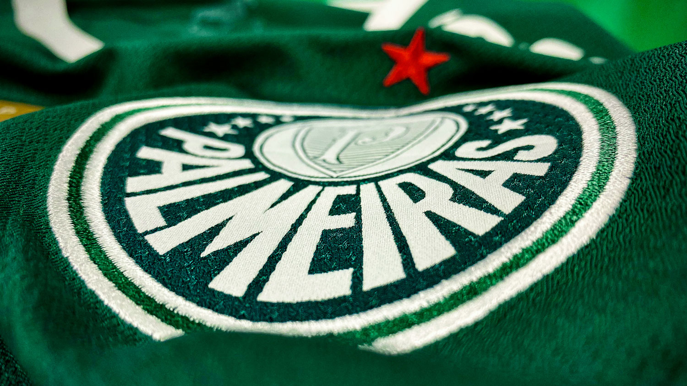

O Manchester City é apontado como melhor time do mundo de acordo com o ranking divulgado pela Federação Internacional de História e Estatísticas do Futebol (IFFHS). O levantamento tem como critério o desempenho das equipes entre novembro de 2022 e outubro de 2023.
A lista divulgada pela organização leva em conta 394 clubes espalhados pelo mundo. A equipe de Pep Guardiola mantém a primeira colocação há três meses consecutivos. A conquista da Tríplice Coroa por parte do time inglês na temporada passada é a grande responsável pelo título de “melhor time do mundo”.
Um nome que chama a atenção nas primeiras posições é o do Al Ahly, do Egito, que pulou para o terceiro lugar. Já a decepção fica por conta do Flamengo, que caiu da sexta para a décima primeira posição. Entres as equipes mencionadas no ranking aparecem dezoito brasileiras: três no top 10, sete no top 20 e doze no top 100. Os times brasileiros com as melhores posições são Palmeiras (5ª), Fortaleza (6º) e Fluminense (10ª).
7 Melhores times do mundo – Ranking IFFHS (nov/22 a out/23)

1. Manchester City (ING)
296 pontos
2. Real Madrid (ESP)
288 pontos
3. Al Ahly (EGY)
244 pontos
4. Internazionale (ITA)
241 pontos
5. Palmeiras (BRA)
212 pontos
6. Fortaleza (BRA)
211,5 pontos
7. Porto (POR)
207 pontos
Os outros times brasileiros que completam a lista são: Botafogo (25º), Corinthians (32º), Red Bull Bragantino (33º), Athletico-PR (41º), Atlético-MG (46º), Goiás (111º), América-MG (165º), Santos (201º). Grêmio (215º), Cuiabá (259º), Bahia (324º) e Cruzeiro (365º).
Melhores times da Conmebol – Ranking IFFHS (nov/22 a out/23)
O ranking também é dividido por confederações. Neste recorte, os times brasileiros vencem de lavada os rivais. São sete representantes no top 10. Um detalhe curioso é que nenhum clube argentino aparece entre os dez primeiros e apenas três ocupam o top 20.
Clube de Regatas Vasco da Gama
Principais Títulos
Copa Libertadores (1998)
O Vasco da Gama conquistou sua primeira e única Libertadores em 1998. Com um time forte, superou adversários tradicionais e venceu o Barcelona de Guayaquil (EQU) na final, consolidando-se como o melhor da América do Sul naquele ano.
Copa Mercosul (2000)
Em uma das finais mais épicas do futebol sul-americano, o Vasco virou um 3 a 0 contra o Palmeiras no segundo jogo e venceu por 4 a 3 no Parque Antarctica, garantindo o título da Copa Mercosul com uma atuação histórica.
Campeonato Sul-Americano de Campeões (1948)
Considerado o embrião da Libertadores, o Vasco foi o campeão da primeira competição continental da história. O título foi conquistado de forma invicta no Chile, enfrentando os principais campeões da América do Sul da época.
Campeonato Brasileiro Série A (4 títulos)
O Vasco da Gama é tetracampeão brasileiro, com conquistas marcantes em diferentes décadas. O primeiro título veio em 1974, com uma equipe sólida que superou o Cruzeiro na final. Em 1989, comandado por Roberto Dinamite, venceu o São Paulo. Em 1997, com Edmundo em grande fase, dominou a competição. O quarto título foi em 2000, na polêmica Copa João Havelange, derrotando o São Caetano na decisão.
Copa do Brasil (2011)
O Vasco conquistou a Copa do Brasil em 2011 com uma campanha sólida e emocionante. Na final, superou o Coritiba em dois jogos equilibrados, garantindo o título inédito e uma vaga na Libertadores do ano seguinte.
Escalação dos Sonhos
Carlos Germano
Goleiro seguro e ídolo da torcida, foi peça fundamental nas conquistas dos anos 1990, incluindo a Libertadores de 1998.
Felipe Maestro
Lateral e meia habilidoso, conhecido pela visão de jogo e dribles refinados. Foi revelado pelo Vasco e marcou época nos anos 90
Mauro Galvão
Zagueiro experiente, capitão do time campeão da Libertadores em 1998. Elegante e técnico, liderava com inteligência.
Dimas
Lateral-esquerdo com passagem sólida pelo clube, contribuiu com consistência defensiva em épocas importantes.
Júnior
Versátil, jogava como lateral ou volante. Não tão lembrado quanto outros nomes, mas teve participação relevante em sua passagem.
Nasa
Volante marcador, conhecido pela raça e dedicação. Foi titular na campanha vitoriosa da Libertadores de 1998 e formou dupla sólida com Juninho Pernambucano no meio-campo
Tita
Meia ofensivo de forte personalidade e boa chegada ao ataque. Teve grande influência nos anos 1980 e início dos 90.
Juninho Pernambucano
Um dos maiores ídolos do Vasco. Meia inteligente, decisivo e especialista em cobranças de falta. Brilhou na conquista da Libertadores.
Pedrinho
Revelado pelo Vasco, meia-atacante habilidoso e veloz. Participou da campanha do título de 1997 e da Libertadores.
Edmundo
O “Animal”. Ídolo vascaíno, artilheiro, polêmico e decisivo. Fez história especialmente no Brasileirão de 1997.
Romário
Um dos maiores atacantes da história do futebol. Ídolo do Vasco, com passagens marcantes e muitos gols decisivos.
Roberto Dinamite
O maior artilheiro da história do Vasco. Símbolo do clube, maior ídolo, e referência dentro e fora de campo.